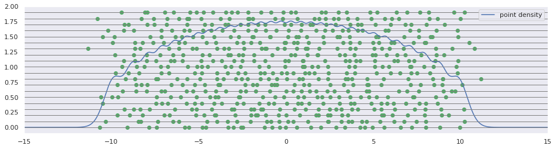
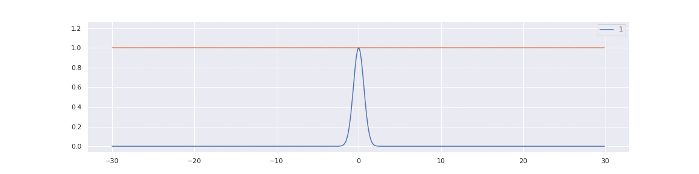
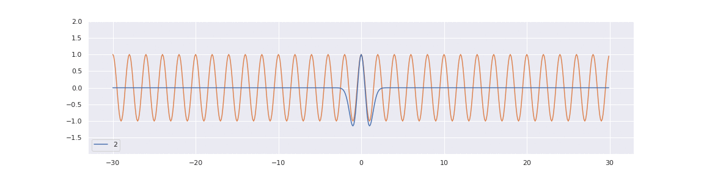
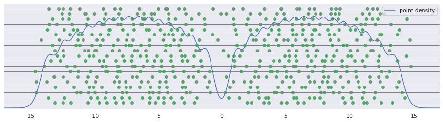

Pearcey Kernel Basis: Beyond Second Order Differential Eigenvalue Equations
There is a well-known connection between orthogonal polynomials, second-order Sturm-Liouville differential equations, random matrices, and orthogonal projectors in L₂. This post explores an extension of this topic: a basis for the Pearcey Kernel, found using third-order equations and biorthogonal bases.
There is a well-known connection between orthogonal polynomials, second-order Sturm-Liouville differential equations, random matrices, and orthogonal projectors in \(L_2\). This post explores an extension of this topic. We have identified a basis for the Pearcey Kernel, initially introduced by Brezin and Hikami. To achieve this, we move beyond the traditional approach of second-order differential equations and orthogonal polynomials, employing third-order equations and biorthogonal bases instead.
For readers who may not be familiar with this topic, we have prepared a crash introduction below. If you’re already comfortable with concepts like the Circular Law for random matrices, the Airy kernel, and determinantal point processes, you can skip this section without missing any crucial information.
1 Crash Introduction
1.1 Orthogonal Matrix Ensemble
Let \(H\) be an \(N \times N\) real-valued matrix. We define a probability measure for such matrices using the following probability density function: \[ \rho_N^{\mathrm{ort}}(H) := \mathcal{C}_N \, e^{-\frac12 \mathrm{Tr}\, H^2}. \] Here, \(\mathcal{C}_N\) is the normalization coefficient that depends solely on its indices and may vary from one equation to another. This probabilistic model is referred to as the orthogonal matrix ensemble because it remains invariant under the orthogonal matrix transformation \(H \rightarrow O^{-1} H O\) for any orthogonal matrix \(O\).
It is possible to show (see, for example, Mehta, Random Matrices, section 5.3) that the random law for the set of eigenvalues \(\{\lambda_i\}_{0 \leq i < N}\) of \(H\) is given by the probability density function: \[ \rho_N^{\mathrm{ort}}(\lambda_0, \lambda_1, \dotso \lambda_{N-1}) = \mathcal{C}_N \prod_{0 \leq i < j < N} \left| \lambda_i - \lambda_j \right| \prod_{0 \leq i < N} e^{-\frac{\lambda_i^2}{2}} = \mathcal{C}_N \, e^{ \sum_{0 \leq i < j < N} \log\left| \lambda_i - \lambda_j \right| - \frac12 \sum_{0 \leq i < N} \lambda_i^2}. \] This probabilistic model can be easily interpreted physically. The expression above represents a Boltzmann distribution for a one-dimensional gas containing \(N\) particles, located in a stationary quadratic potential with a repulsive logarithmic potential between each pair of particles.

1.2 Determinantal Point Process
The random law described in the previous subsection is an example of a determinantal point process. This is a type of random law on a collection of \(N\) unordered real numbers \(\{\lambda_i\}_{0 \leq i < N}\) represented by the probability density function: \[ \rho_N( \lambda_0, \lambda_1, \dotso \lambda_{N-1} ) := \mathcal{C}_N \, \det \left[ \left\{ K(\lambda_i, \lambda_j) \right\}_{0 \leq i,j < N} \right], \] where \(K(x,y)\) is a real-valued function of two arguments. This function can be understood as the kernel of a linear operator that is \[ K: \psi(x) \mapsto (K \psi)(x) := \int dy~ K(x,y) \psi(y). \] This operator acts on a linear space of functions represented by \(\psi(x)\). We assume the projection property: \[ \int_{-\infty}^{+\infty} dy~ K(x, y) K(y, z) = K(x, z). \label{eq:projection-property} \] for \(K(x,y)\).
It can be shown that the correlation functions for any subset of particles \(\lambda\) have the same form as \(\rho_N\). Specifically: \[ C_{N,L} \, ( \lambda_0, \lambda_1, \dotso \lambda_{L-1} ) = \mathcal{C}_{N,L} \det \left[ \left\{ K(\lambda_i, \lambda_j) \right\}_{0 \leq i,j < L} \right], \quad L=0,1,2,\dotso N \label{eq:dpp-correlation} \] In particular, the first correlation function: \[ C_{N,1}(\lambda) = K(\lambda, \lambda)^{-1} \] is responsible for the mean density of the eigenvalues. The correlation between two eigenvalues is: \[ C_{N,2}(\lambda_0, \lambda_1) = K(\lambda_0, \lambda_0) K(\lambda_1, \lambda_1) - K(\lambda_0, \lambda_1)^2. \label{eq:two-point-cor} \] It can be shown (see, for example, Mehta, Random Matrices) that the random law from the previous subsection is a determinantal point process with the kernel: \[ K_N^{\mathrm{ort}}(x,y) = \sum_{0 \leq i < N} \psi_i(x) \psi_i(y). \label{eq:kernel-decomposition} \] Here, we introduced the Hermite functions \(\psi_i(x)\): \[ \psi_i(x) := \frac{1}{(2 \pi)^{\frac14} n!^\frac12 } e^{\frac{x^2}{4}} \mathrm{He}_i(x), \quad i = 0, 1, 2, \dotso, \] where \(\mathrm{He}_i(x)\) is the Hermite polynomial of order \(i\). The Hermite functions form an orthogonal basis in \(L_2(\mathbb{R})\), namely, the family is orthogonal: \[ \int_{-\infty}^{+\infty} dx~ \psi_i(x) \psi_j(x) = \delta_{i,j}, \quad i,j=0,1,2,\dotso \label{eq:orthogonality} \] and complete: \[ \sum_{i=0}^{+\infty} \psi_i(x) \psi_i(y) = \delta(x-y). \label{eq:completeness} \]
To be mathematically rigorous, we have to specify the meaning of the delta function. Here and below, we choose the Schwartz linear space of smooth functions on \(\mathbb{R}\) that decrease faster than any polynomial, equipped with the topology of local uniform convergence of all derivatives. Let the Dirac delta functional be the identity linear functional on this space. We drop the convolution with the test function \(f(x)\) from this space for brevity.
Thus, there is a relationship between the random law on the set of real numbers defined by the kernel \(K_N(x,y)\) and an orthogonal basis \(\{\psi_i(x)\}_{i=0}^{+\infty}\).
Note that the Hermite functions \(\psi_i\) for \(i = 0,1,2,\dotso\) are the only solutions to the second-order differential equation: \[ \psi''(x) + \left( i + \frac12 - \frac{x^2}{4} \right) \psi(x) = 0 \label{eq:hermite-dif} \] for \(i \in \mathbb{R}\) that are square-integrable on \(\mathbb{R}\).
If we consider Hermitian matrices \(H\) from the very beginning instead of real ones (unitary ensemble), the only change in the random law for the eigenvalues is a rescaling factor \(x \rightarrow 2^\frac12 x\).
To summarize this subsection, we define a collection of random laws on the set of \(N = 0, 1, 2, \dotso\) real numbers. This random law is related to a projection operator \(K_N\) that highlights an \(N\)-dimensional subspace \(V_N^\mathrm{ort} \subset L_2(\mathbb{R})\). For these subspaces, we have a natural orthogonal basis \(\{\psi_i\}_{i=0}^{+\infty}\) such that: \[ V_N^\mathrm{ort} = \mathrm{span} \{\psi_i\}_{i=0}^{N-1}, \quad N = 0, 1, 2, \dotso. \]
1.3 Scaling Limit
In various fields, such as statistical physics, we frequently consider the limit as \(N \rightarrow +\infty\), where \(N\) could represent the number of particles, dimensions, or another discrete parameter. This limiting model can exhibit remarkable behavior, which is a subject of great interest. We will examine a few examples below and then return to the orthogonal ensemble.
One of the simplest examples is the Central Limit Theorem. This theorem in particular states that the sum of \(N\) independent, identically distributed random variables \(\{X_i\}_{0 \leq i < N}\), divided by \(\sqrt{N}\), approaches the standard normal distribution as \(N \rightarrow +\infty\), provided that the expectation of \(X_i\) is \(0\) and the variance equals \(1\). \[ \mathrm{law} \left[ \frac{\sum_{0 \leq i < N} X_i}{\sqrt N} \right] \quad \xrightarrow{N \rightarrow ~\infty} \quad \mathcal{N}(0, 1). \] We omit some technical details and do not specify how such a limit should be defined.
At least three important phenomena can be observed:
The limit random law exists with a certain rescaling, which in this case is the factor \(N^{-\frac12}\).
The limit law is universal. This means that regardless of the initial law with mean \(0\) and variance \(1\) for \(X\), the limit law is still the normal law.
The limit law has a symmetry property that the initial laws may not possess. For example, the normal random law is symmetric with respect to the mirror reflection \(x \rightarrow -x\), which may not be true for the finite sum of \(X_i\).
Another well-known and classical example of the scaling limit is the Ising Model, a probability model on a finite, say square, lattice of size \(N \times N\). Remarkably, a properly defined limit random law \(N \rightarrow +\infty\) exists, does not depend on the lattice type, is invariant with respect to angle-preserving spacial transforms, and exhibits new remarkable properties such as phase transition.
The random matrix model defined in the previous section would not be as interesting if we did not consider the limit as \(N\) tends to infinity and study the behavior of eigenvalues of an “infinite random matrix”.
1.4 Sine Process
First, note that if \(\{\psi_i(x)\}_{i=0}^{+\infty}\) is an orthonormal basis in \(L_2(\mathbb{R})\), then \[ \{A \cdot \psi_i(A x + B)\}_{i=0}^{+\infty}, \quad A \neq 0, \quad B \in \mathbb{R}, \] is also an orthonormal basis.
To establish a limit law for the eigenvalues of the orthogonal matrix ensemble, we consider the limit of its kernel function \(K(x,y)\) as follows: \[ C_N \cdot K^{\mathrm{ort}}_N(N^{-\frac12} x, N^{-\frac12} y) \quad \xrightarrow{N \rightarrow ~\infty} \quad K^{\mathrm{Sine}}(x,y) := \frac{\sin(x-y)}{\pi (x-y)}. \label{eq:sine-limit} \] Here, \(C_N\) is a normalization coefficient necessary to obtain a finite limit. For instance, we can set: \[ C_N = \frac{1}{\pi K^{\mathrm{ort}}_N(0, 0)}. \] The limit \(K^{\mathrm{Sine}}\), known as the Sine-kernel, defines a random law on an infinite countable set of real numbers with the correlation functions given in \(\eqref{eq:dpp-correlation}\).


Note that the sine random law is invariant with respect to translation \(x \rightarrow x + c\) for any real \(c\), which is not true for its finite \(N\) analogs. The sine law has a physical interpretation as a one-dimensional gas of particles under a repulsive logarithmic potential, placed uniformly along the unbounded real line with an average particle density of \(1\).
To better understand this limit, consider that for any \(\omega > 0\): \[ \frac{\psi_i\left( N^{-\frac12} x \right)} {\psi_i(0)} \quad \xrightarrow[\frac{i}{N} \rightarrow ~ \omega^2]{N,~i \rightarrow ~\infty} \quad \cos(\omega x), \quad i = 2 k, \quad k = 0,1,2,\dotso, \] \[ \frac{\psi_i\left( N^{-\frac12} x \right)} {{\psi}'_i(0)} \quad \xrightarrow[\frac{i}{N} \rightarrow ~ \omega^2]{N,~i \rightarrow ~\infty} \quad \sin(\omega x), \quad i = 2 k + 1 , \quad k = 0,1,2,\dotso \label{eq:harmonic-limits} \]

Now, decompose the left and right-hand sides of limit \(\eqref{eq:sine-limit}\) as follows: \[ K^{\mathrm{ort}}_N(N^{-\frac12} x, N^{-\frac12} y) = \sum_{0 \leq i < N} \psi_i\left( N^{-\frac12} x \right) \psi_i\left( N^{-\frac12} y \right). \] \[ K^{\mathrm{Sine}}(x,y) = \frac{1}{2 \pi} \int_{0}^{1} d\omega ~ \left( \cos(\omega x)\cos(\omega y) + \sin(\omega x) \sin(\omega y) \right). \] We observe that the even and odd Hermite functions tend towards \(\cos\) and \(\sin\) functions, respectively, up to normalization coefficients. Furthermore, the values \(\left\{ \sqrt{\frac{i}{N}} \right\}_{0 \leq i < N}\) densely populate the interval \([0,1]\), which is the range of \(\omega\) in \(\eqref{eq:sine-limit}\), as \(N \rightarrow +\infty\). Thus, heuristically, the discrete spectrum decomposition for the finite particle model approaches the continuous Fourier spectrum decomposition.
Note that the Fourier basis is not a basis in the sense of a countable family of square-integrable functions like the Hermite functions. To define it rigorously, we need to introduce the concept of a rigged Hilbert space, as detailed in Gelfand and Vilenkin: Generalized Functions, Volume 4.
Finally, consider the behavior of the differential equation \(\eqref{eq:hermite-dif}\). After substituting \(x \rightarrow N^{-\frac12} x\), we obtain: \[ N \psi''\left( N^{-\frac12} x \right) + \left( i + \frac12 - \frac{x^2}{4 N} \right) \psi\left( N^{-\frac12} x \right) = 0. \] Dividing by \(N\), this equation tends towards the differential equation for \(\cos(\omega x)\) and \(\sin(\omega x)\): \[ \psi''\left( x \right) + \omega^2 \psi\left( x \right) = 0 \] with \(\sqrt{\frac{i}{N}} \rightarrow \omega\) and \(N \rightarrow +\infty\).
Thus, the scaling limit for the sine process reveals itself in at least four aspects:
Limit of random laws on the set of points \(\lambda\).
Limit of kernels \(K(x,y)\).
Limit of subspaces in \(L_2(\mathbb{R})\) defined by projection operators \(K\). These subspaces can be defined with a properly rescaled orthonormal basis \(\{ \psi_i\}_{i=0}^{+\infty}\).
Limit of differential equations.
The sine limit is not the only possibility. For example, a similar limit for the substitution \(x \rightarrow 2 N + N^{-\frac16} x\) leads to the Airy kernel: \[ K^{\mathrm{Airy}}(x,y) := \frac{\mathrm{Ai}(x)\mathrm{Ai}'(y)-\mathrm{Ai}'(x)\mathrm{Ai}(y)}{x-y} = \int_0^{+\infty} d\lambda~ \mathrm{Ai}(\lambda + x) \mathrm{Ai}(\lambda + y), \label{eq:airy-kernel} \] where \(\mathrm{Ai}\) is the Airy function, which forms an orthogonal basis in the sense that: \[ \int_{-\infty}^{+\infty} d\lambda~ \mathrm{Ai}(\lambda + x) \mathrm{Ai}(\lambda + y) = \delta(x-y). \] Another example, as detailed in this paper, is based on the Laguerre polynomials defined on the half-axis \((0, +\infty)\), leading to the Bessel kernel: \[ K^{\mathrm{Bessel}}(x,y) := \frac{ J_{\alpha}(x^\frac12) y^\frac12 J'_{\alpha}(y^\frac12) -x^\frac12 J'_{\alpha}(x^\frac12) J_{\alpha}(y^\frac12) }{ 2(x-y) }, \quad x,y>0 \] Almost all such limits can be understood in terms of orthonormal bases, linear subspaces of \(L_2\), and related well-studied second-order differential equations. However, this structure is violated by the model considered in the next section.
2 Pearcey Kernel
2.1 Biased Unitary Ensemble
Brezin and Hikami considered a unique random matrix model, known as the biased unitary ensemble. Here’s the setup: Let \(H\) be a \(2N \times 2N\) Hermitian matrix. Additionally, let \(H_a\) be a fixed \(2N \times 2N\) matrix with only two distinct eigenvalues, \(a\) and \(-a\) (with \(a > 0\)), each having multiplicity \(N\).
The probability density function defining the random law on these Hermitian matrices \(H\) is given by: \[ \rho_N^a(H) := \left( Z_N^a \right)^{-1} e^{-\frac12 \mathrm{Tr} (H + H_a)^2}, \] where \(Z_N^a\) is a normalization constant. This framework yields a determinantal point process governing the eigenvalues of \(H\), with the kernel: \[ K^a_N(x,y) := \frac{-1}{(2\pi)^2 i} \int\limits_{-\infty}^{\infty} dt~ \oint_{\pm a} du~ \left( \frac{a^2+t^2}{a^2-u^2} \right)^N \frac{1}{u-it}\, e^{-\frac{t^2}{2}-\frac{u^2}{2} - i t x + u y}. \] Here, \(\oint_{\pm a} du\) denotes the Cauchy integral around the singular points \(u = a\) and \(u = -a\) on the complex plane.

Notably, the kernel \(K^a_N\) is not symmetric with respect to permutation of its arguments. Furthermore, transforming the kernel via: \[ K(x,y) \rightarrow \frac{f(x)}{f(y)} K(x,y) \] for any function \(f\) preserves the determinantal probability law. However, even with such a transformation, the kernel \(K^a_N\) cannot be symmetrized. This indicates that the decomposition into an orthogonal basis, as described in \(\eqref{eq:kernel-decomposition}\), is not feasible.
Despite this, the projection property described in \(\eqref{eq:projection-property}\) holds true. This means there exists a linear space of functions that remain unchanged when convolved with the integral operator \(K^a_N\).
2.2 Pearcey Scaling Limit
For small values of \(a\), the random law approximates the form described in Section 1.1, where all eigenvalues form a single cluster. As \(a\) increases, the two clusters of eigenvalues become more distinct. Following Brezin and Hikami, we consider the limit \(a \rightarrow N^{\frac12}\) and \(x \rightarrow N^{-\frac14} x\), for \(N \rightarrow +\infty\). This limit corresponds to the scenario where the two clusters of eigenvalues are exactly on the edge of being separated and merged. The limit \[ K^{\text{Pear}}(x,y) := \lim_{N\rightarrow +\infty} C_N \cdot K^{(2N)^{\frac12}}_N \left( (2N)^{-\frac14}x, (2N)^{-\frac14}y \right) \] is known as the Pearcey kernel. It can be reformulated as follows: \[ K^{\mathrm{Pear}}(x,y) = \frac{\phi'(x)\psi'(y)-\phi''(x)\psi(y)-\phi(x)\psi''(y) }{x-y}, \] where \[ \phi(x) := \frac{1}{\pi} \int\limits_{0}^{+\infty} dt~ e^{-\frac{t^4}{4}} \cos(tx), \] \[ \psi(x) := - \frac{1}{\pi} \mathrm{Im} \left[\omega \int\limits_0^{+\infty} du\, e^{-\frac{u^4}{4}} \left( e^{\omega x u} - e^{-\omega x u} \right)\right], \quad \omega:= e^{\frac{i \pi}{4}}. \] The Pearcey kernel is notable for its asymmetry and the inclusion of second derivatives of the functions \(\phi\) and \(\psi\). This kernel describes the critical behavior of eigenvalues as they transition between forming a single cluster and two distinct clusters.
2.3 Pearcey Basis
In this section, we derive the basis for the Pearcey Kernel, which is the central problem of this article.
2.3.1 Finite \(N\) Basis
Due to the asymmetric nature of the kernel, finding an orthonormal basis is impossible. However, we can still work with a biorthogonal basis, which is a relaxed version of an orthonormal basis. To achieve this, we consider two different collections of functions on \(\mathbb{R}\): \(\{e_{i}\}_{i=0}^{+\infty}\) and \(\{e^\dagger_{i}\}_{i=0}^{+\infty}\), instead of one, and require \[ \int_{-\infty}^{+\infty} dx~ e^\dagger_i(x) e_j(x) = \delta_{i,j}, \quad i,j=0,1,2,\dotso \label{eq:biorthogonality} \] and \[ \sum\limits_{i=0}^{\infty} e_i(x) e^{\dagger}_i(y) = \delta(x-y). \] instead of \(\eqref{eq:orthogonality}\) and \(\eqref{eq:completeness}\). This approach is less restrictive. Specifically, after the transformation \[ e^\dagger_i(x),~e_i(x) \rightarrow f(x) \cdot e^\dagger_i(x),~ \frac{e_i(x)}{f(x)} \] we still have a biorthogonal basis for any function \(f\) that is non-zero at almost all points on \(\mathbb{R}\). Recall that the only freedom for an orthogonal real function basis is the choice of sign for each function.
Our first step to obtain the Pearcey basis is to define the functions \[ \phi_n^a(x) := \frac{1}{\sqrt2\pi} \int\limits_{-\infty}^{\infty} dt~ (t^2+a^2)^n e^{-\frac{t^2}{2}-i t x},\quad n=0,1,2,3,\dotso, \] \[ \psi_n^a(x) := \frac{1}{\sqrt2\pi i} \oint_{\pm a} du~ \frac{e^{-\frac{u^2}{2} + u y}}{(a^2-u^2)^{n+1}},\quad n=0,1,2,3,\dotso. \] These functions are eigenfunctions of the third order differential eigenvalue equations \[ (a^2-\partial_x^2) (\partial_x + x) \phi^a_n(x) = 2 n~ \partial_x \phi^a_n(x),\quad n=0,1,2,\dotso, \] and \[ (\partial_x - x) (a^2-\partial_x^2) \psi^a_n(x) = 2 n~ \partial_x \psi^a_n(x), \quad n=0,1,2,\dotso \] respectively. For example, for \(n=0,1\) we have \[ \phi_0^a(x) = \frac{1}{\sqrt{\pi}} e^{-\frac{x^2}{2}}, \quad \phi_1^a(x) = \frac{1}{\sqrt{\pi}} (1+a^2-x^2) e^{-\frac{x^2}{2}},\\ \psi_0^a(x) = -\sqrt2 \frac{e^{-\frac{a^2}{2}}}{a} \mathrm{sh}(ax), \quad \psi_1^a(x) = \frac{e^{-\frac{a^2}{2}}}{\sqrt2 a^3} \left( ax \,\mathrm{ch}(ax) - (1+a^2)~\mathrm{sh}(ax) \right), \] We define the biorthogonal basis by \[ e_{2n}^a(x) := 2^{-\frac12} \phi_n^a(x) ,\quad e_{2n+1}^a(x) := 2^{-\frac12} \phi_n^a{}'(x),\quad n=0,1,2,3,\dotso, \] \[ {e^{\dagger}}_{2n}^a(x) := -2^{-\frac12} \psi_n^a{}'(x),\quad {e^{\dagger}}_{2n+1}^a(x) := 2^{-\frac12} \psi_n^a(x),\quad n=0,1,2,3,\dotso. \] It is straightforward to check the biorthogonality \(\eqref{eq:biorthogonality}\) as well as the decomposition \[ K_N^a(x,y) = \sum\limits_{i=0}^{2 N-1} e_i^a(x) {e^{\dagger}}^a_i(y) = \frac12 \sum\limits_{n=0}^{N-1} \left( \phi^a_n{}'(x) \psi^a_n(y) - \phi^a_n(x) \psi^a_n{}'(y) \right). \]
For odd \(n\) and even \(m\) we calculate \[ \begin{aligned} \int\limits_{-\infty}^{\infty} dx~ \psi^a_n{}'(x) \phi^a_m(x) = \frac{2}{(2\pi)^2 i} \int\limits_{-\infty}^{\infty} dt~ \oint du~ \int\limits_{-\infty}^{\infty} dx~ u\frac{(t^2+a^2)^m }{(u^2-a^2)^{n+1}} e^{-\frac{u^2}{2} + u x -\frac{t^2}{2}-i t x} = \dotso \end{aligned} \] after the change of variables \(t\rightarrow t - i u\) we have \[ \begin{aligned} \dotso =& \frac{2}{(2\pi)^2 i} \int\limits_{-\infty}^{\infty} dt~ \oint_{\pm a} du~ \int\limits_{-\infty}^{\infty} dx~ u\frac{(a^2+t^2)^m }{(a^2-u^2)^{n+1}} e^{-\frac{u^2}{2} + u x -\frac{t^2}{2}-i t x} =\\=& \frac{2}{(2\pi)^2 i} \int\limits_{-\infty}^{\infty} dt~ \oint_{\pm a} du~ u\frac{(a^2+(t-iu)^2)^m }{(a^2-u^2)^{n+1}} e^{-\frac{u^2}{2} - \frac{(t-iu)^2}{2}} \int\limits_{-\infty}^{\infty} dx~ e^{-i t x} =\\=& \left. \frac{2}{(2\pi) i} \int\limits_{-\infty}^{\infty} dt~ \oint_{\pm a} du~ u\frac{(a^2+(t-iu)^2)^m }{(a^2-u^2)^{n+1}} e^{-\frac{u^2}{2} - \frac{(t-iu)^2}{2}} \right|_{t=0} =\\=& \frac{2}{2\pi i} \int\limits_{-\infty}^{\infty} dt~ \oint_{\pm a} du~ u~ (a^2-u^2)^{m-n-1} = -\delta_{n,m}. \end{aligned} \] The identities \[ \int\limits_{-\infty}^{\infty} dx~ \psi^a_n{}'(x) \phi^a_m{}'(x) = 0,\quad \int\limits_{-\infty}^{\infty} dx~ \psi^a_n(x) \phi^a_m(x) = 0, \quad \int\limits_{-\infty}^{\infty} dx~ \psi^a_n(x) \phi^a_m{}'(x) = 2\delta_{n,m}. \] can be shown analogously. The next formula can be proved as follows \[ \begin{aligned} &\sum\limits_{i=0}^{\infty} e_i(x) e^{\dagger}_i(y) = \sum\limits_{n=0}^{\infty} \phi_n{}'(x) \psi_n(y) -\phi_n(x) \psi_n{}'(y) =\\=& \frac{1}{(2\pi)^2 i} \int\limits_{-\infty}^{\infty} dt~ \oint du~ \sum\limits_{n=0}^{\infty} (-it)\frac{(a^2+t^2)^n}{(a^2-u^2)^{n+1}} e^{-\frac{t^2}{2}-i t x -\frac{u^2}{2} + u y} -\\-& \frac{1}{(2\pi)^2 i} \int\limits_{-\infty}^{\infty} dt~ \oint du~ \sum\limits_{n=0}^{\infty} u\frac{(a^2+t^2)^n}{(a^2-u^2)^{n+1}} e^{-\frac{t^2}{2}-i t x -\frac{u^2}{2} + u y} =\\=& \frac{-1}{(2\pi)^2 i} \int\limits_{-\infty}^{\infty} dt~ \oint du~ \sum\limits_{n=0}^{\infty} (u+it)\frac{(a^2+t^2)^n}{(a^2-u^2)^{n+1}} e^{-\frac{t^2}{2}-i t x -\frac{u^2}{2} + u y} =\\=& \frac{-1}{(2\pi)^2 i} \int\limits_{-\infty}^{\infty} dt~ \oint\limits_{|u|=|t|+\varepsilon} du~ \frac{u+it}{a^2-u^2 - (a^2 + t^2) } e^{-\frac{t^2}{2}-i t x -\frac{u^2}{2} + u y} =\\=& \frac{1}{(2\pi)^2 i} \int\limits_{-\infty}^{\infty} dt~ \oint\limits_{|u|=|t|+\varepsilon} du~ \frac{u+it}{u^2 + t^2} e^{-\frac{t^2}{2}-i t x -\frac{u^2}{2} + u y} =\\=& \frac{1}{(2\pi)^2 i} \int\limits_{-\infty}^{\infty} dt~ \oint\limits_{|u|=|t|+\varepsilon} du~ \frac{1}{u - it} e^{-\frac{t^2}{2}-i t x -\frac{u^2}{2} + u y} =\\=& \frac{1}{2\pi} \int\limits_{-\infty}^{\infty} dt~ \left. e^{-\frac{t^2}{2}-i t x -\frac{u^2}{2} + u y} \right|_{u=it} = \frac{1}{2\pi} \int\limits_{-\infty}^{\infty} dt~ e^{-i t x + i t y} = \delta(x-y). \end{aligned} \] We find now the kernel decomposition \[ \begin{aligned} &\sum\limits_{i=0}^{2(N-1)} e_i(x) e^{\dagger}_i(y) = \sum\limits_{i=0}^{\infty} e_i(x) e^{\dagger}_i(y) - \sum\limits_{i=2N}^{\infty} e_i(x) e^{\dagger}_i(y) =\\=& \frac{1}{(2\pi)^2 i} \int\limits_{-\infty}^{\infty} dt~ \oint\limits_{|u|=|t|+\varepsilon} du~ \frac{1}{u - it} e^{-\frac{t^2}{2}-i t x -\frac{u^2}{2} + u y} -\\-& \frac{1}{(2\pi)^2 i} \int\limits_{-\infty}^{\infty} dt~ \oint\limits_{|u|=|t|+|a|+\varepsilon} du~ \left( \frac{a^2+t^2}{a^2-u^2} \right)^N \frac{1}{u - it} e^{-\frac{t^2}{2}-i t x -\frac{u^2}{2} + u y} =\\=& \frac{-1}{(2\pi)^2 i} \int\limits_{-\infty}^{\infty} dt~ \oint_{\pm a} du~ \left( \frac{a^2+t^2}{a^2-u^2} \right)^N \frac{1}{u - it} e^{-\frac{t^2}{2}-i t x -\frac{u^2}{2} + u y} =\\=& K_N^a(x,y). \end{aligned} \]
2.3.2 Limit basis
We consider now the analogous of scaling limits \(\eqref{eq:harmonic-limits}\). Let \(N,n \rightarrow +\infty\) such that \[ \frac{2^{\frac12}\left( N - n - 1 \right)}{N^{\frac12}} \rightarrow \lambda \] for some fixed \(\lambda \in \mathbb{R}\). By the saddle point method it can be shown that \[ \mathcal{C}_N \, (2N)^{\frac14-n} \, \phi_n^{(2N)^{\frac12}} \left((2N)^{-\frac14} x\right) \quad \longrightarrow \quad \phi_{\lambda} (x), \] \[ \mathcal{C}_N \, (2N)^{\frac14+n} \, \psi_n^{(2N)^{\frac12}} \left((2N)^{-\frac14} x\right) \quad \longrightarrow \quad \psi_{\lambda} (x), \] where \[ \phi_{\lambda}(x) := \frac{1}{2\pi} \int\limits_{-\infty}^{+\infty} dt\, e^{-\frac{t^4}{4} - \frac{\lambda t^2}{2} - i t x}, \] \[ \psi_{\lambda}(x) := \frac{1}{2\pi i} \int\limits_{\mathcal{C}} du\, e^{\frac{u^4}{4} - \frac{\lambda u^2}{2} + u x}. \] Here and below, the integral “\(\int\limits_{\mathcal{C}}\)” is over the union of two infinite paths on the complex plane. The first one is from \(+\infty \cdot e^{i \frac34 \pi}\) to \(+\infty \cdot e^{i \frac14 \pi}\) and the second one is from \(+\infty \cdot e^{-i \frac14 \pi}\) to \(+\infty \cdot e^{- i \frac34 \pi}\). The functions \(\phi_{\lambda}\) and \(\psi_{\lambda}\) are solutions to the third order differential eigenequations \[ \left( \partial_x^3 - x \right) \phi_{\lambda}( x) = \lambda~ \partial_x \phi_{\lambda}( x), \] \[ \left( \partial_x^3 + x \right) \psi_{\lambda}(x) = \lambda~ \partial_x \psi_{\lambda}(x) \] for \(\lambda\in\mathbb{R}\). It is is also true that \[ \phi_0(x) = \phi(x), \quad \psi_0(x) = \psi(x). \]
The eigenequation for \(\phi^a_N\) for becomes \[ \begin{aligned} &\left( (2N)^{\frac54} \partial_{x} + (2N)^{\frac34} x - (2N)^{\frac34} \partial_{x}^3 - (2N)^{\frac14} x \partial_{x}^2 \right) \phi^{(2N)^{\frac12}}_n((2N)^{-\frac14} x) = (2N)^{\frac14}2(n+1) \partial_{x} \phi^{(2N)^{\frac12}}_n((2N)^{-\frac14} x) \quad \Leftrightarrow \\ \Leftrightarrow \quad & \left(\partial_{ x}^3 - x - 2^{-\frac12} N^{-\frac12} x \partial_{x}^2 \right) \phi_n^{(2N)^{\frac12}} ((2N)^{-\frac14} x) = \frac{2^{\frac12}\left( N - n - 1 \right)}{N^{\frac12}} \phi_n^{(2N)^{\frac12}} \left((2N)^{-\frac14} x\right) \quad \longrightarrow \\ \longrightarrow \quad & \left(\partial_{x}^3 - x \right) \phi_{\lambda}( x) = \lambda \partial_{ x} \phi_{\lambda}( x). \end{aligned} \] For \(\psi^a_N\) we have analogously \[ \begin{aligned} &\left( (2N)^{\frac54} \partial_{ x} - (2N)^{\frac34} x - (2N)^{\frac34} \partial_{x}^3 + (2N)^{\frac14} \partial_{x}^2 x \right) \psi^{(2N)^{\frac12}}_n((2N)^{-\frac14} x) = (2N)^{\frac14}2(n+1) \partial_{x} \psi^{(2N)^{\frac12}}_n((2N)^{-\frac14} x) \quad \Leftrightarrow \\ \Leftrightarrow \quad & \left(\partial_{x}^3 + x - 2^{-\frac12} N^{-\frac12} \partial_{x}^2 x \right) \psi_n^{N^{\frac12}} ((2N)^{-\frac14} x) = \frac{2^{\frac12}\left( N - n - 1 \right)}{N^{\frac12}} \psi_n^{(2N)^{\frac12}} ((2N)^{-\frac14}x) \quad \longrightarrow \\ \longrightarrow \quad & \left(\partial_{x}^3 + x \right) \psi_{\lambda}(x) = \lambda \partial_{x} \psi_{\lambda}(x). \end{aligned} \]
We now define a two-fold real continuous biorthogonal basis. Specifically, for each fixed \(\lambda \in \mathbb{R}\), there are two left basis functions \(e^\dagger_\lambda\) and two right basis functions \(e_\lambda\). This is analogous to the real Fourier continuous orthogonal basis, where for each \(\lambda \in \mathbb{R}\), we have two real basis functions \(\{ \sin(\lambda x), \cos(\lambda x) \}\).
The pair of collections \[ \{-2^{-\frac12} \psi_{\lambda}', 2^{-\frac12} \psi_{\lambda}\}_{\lambda\in\mathbb{R}}, \quad \{2^{-\frac12} \phi_{\lambda}, 2^{-\frac12} \phi_{\lambda}' \}_{\lambda\in\mathbb{R}} \] is a biorthogonal basis on \(L_2(\mathbb{R})\), namely \[ \int\limits_{-\infty}^{+\infty} dx\, \psi_{\lambda}'(x) \phi_{\mu}(x) = -2\,\delta(\lambda-\mu), \] \[ \int\limits_{-\infty}^{+\infty} dx\, \psi_{\lambda}'(x) \phi_{\mu}'(x) = 0, \] \[ \int\limits_{-\infty}^{+\infty} dx\, \psi_{\lambda}(x) \phi_{\mu}(x) = 0 \] \[ \int\limits_{-\infty}^{+\infty} dx\, \psi_{\lambda}(x) \phi_{\mu}'(x) = 2\,\delta(\lambda-\mu), \] and \[ \frac12 \int\limits_{-\infty}^{+\infty} d\lambda \left( \phi_{\lambda}{}'(x) \psi_{\lambda}(y) - \phi_{\lambda}(x) \psi_{\lambda}{}'(y) \right) = \delta(x-y) \] where \(\delta\) is the Dirac delta function.
\[ \begin{aligned} &\int\limits_{-\infty}^{+\infty} dx\, \psi_{\lambda}'(x) \phi_{\mu}(x) =\\=& \frac{1}{(2\pi)^2 i} \int\limits_{-\infty}^{+\infty} dt \int\limits_{\mathcal{C}} du \int\limits_{-\infty}^{+\infty} dx\, u \,e^{ \frac{u^4}{4} - \frac{\lambda u^2}{2} + u x - \frac{t^4}{4} - \frac{\mu t^2}{2} - itx} =\\=& \frac{1}{(2\pi)^2 i} \int\limits_{-\infty}^{+\infty} dt \int\limits_{\mathcal{C}} du\, u \,e^{ \frac{u^4}{4} - \frac{\lambda u^2}{2} - \frac{(t-iu )^4}{4} - \frac{\mu (t-iu)^2}{2} } \int\limits_{-\infty}^{+\infty} dx\, e^{-i t x} =\\=& \frac{1}{2\pi i} \int\limits_{\mathcal{C}} du \left. u \,e^{ \frac{u^4}{4} - \frac{\lambda u^2}{2} - \frac{(t-iu )^4}{4} - \frac{\mu (t-iu)^2}{2} } \right|_{t=0} =\\=& \frac{1}{2\pi i} \int\limits_{\mathcal{C}} du\, u \,e^{ - \frac{\lambda u^2}{2} + \frac{\mu u^2}{2} } =\\=& \frac{1}{2\pi i} \int\limits_{\mathcal{C}} d\frac{u^2}{2}\, e^{ - \frac{\lambda u^2}{2} + \frac{\mu u^2}{2} } =\\=& \frac{-2}{2\pi } \int\limits_{-\infty}^{\infty} d t \, e^{ - i \lambda t + i \mu t} =\\=& -2\,\delta(\lambda-\mu). \end{aligned} \] Other 3 statements can be show in the same manner. The last identity can be proved as follows \[ \begin{aligned} &\frac12 \int\limits_{-\infty}^{+\infty} d\lambda \left( \phi_{\lambda}{}'(x) \psi_{\lambda}(y) - \phi_{\lambda}(x) \psi_{\lambda}{}'(y) \right) =\\=& \int\limits_{-\infty}^{+\infty} d\lambda \frac{1}{2(2\pi)^2 i} \int\limits_{-\infty}^{+\infty} dt \int\limits_{\mathcal{C}} du\, (-it-u) e^{-\frac{t^4}{4} - \frac{\lambda t^2}{2} - itx + \frac{u^4}{4} - \frac{\lambda u^2}{2} + u y} =\\=& \frac{-1}{2(2\pi)^2 i} \int\limits_{-\infty}^{+\infty} dt \int\limits_{\mathcal{C}} du\, \int\limits_{-\infty}^{+\infty} d\lambda \frac{u^2+t^2}{u-it} e^{-\frac{t^4}{4} - \frac{\lambda t^2}{2} - itx + \frac{u^4}{4} - \frac{\lambda u^2}{2} + u y} =\\=& -\frac{ \lim_{\Lambda \to +\infty} }{(2\pi)^2 i} \int\limits_{-\infty}^{+\infty} dt \int\limits_{\mathcal{C}} du\, \int\limits_{-\Lambda}^{+\infty} d\lambda \frac{-\partial_{\lambda}}{u-it} e^{-\frac{t^4}{4} - \frac{\lambda t^2}{2} - itx + \frac{u^4}{4} - \frac{\lambda u^2}{2} + u y} =\\=& \frac{ \lim_{\Lambda \to +\infty} }{(2\pi)^2 i} \int\limits_{-\infty}^{+\infty} dt \int\limits_{\mathcal{C}} du\, \frac{e^{-\frac{t^4}{4} - itx + \frac{u^4}{4} + u y + \frac{\Lambda}{2} (t^2+u^2)}}{u-it} =\\=& \frac{ \lim_{\Lambda \to +\infty} }{2\pi} \int\limits_{-\infty}^{+\infty} dt \left. e^{-\frac{t^4}{4} - itx + \frac{u^4}{4} + u y + \frac{\Lambda}{2} (t^2+u^2)} \right|_{u=it} +\\+& \frac{ \lim_{\Lambda \to +\infty} }{(2\pi)^2 i} \int\limits_{-\infty}^{+\infty} dt \int\limits_{\mathcal{C}'} du\, \frac{e^{-\frac{t^4}{4} - itx + \frac{u^4}{4} + u y + \frac{\Lambda}{2} (t^2+u^2)}}{u-it}. \end{aligned} \] The first term in the last expression results from the contour integration by \(u\) around \(u = it\). In the second integral, the contour \(\mathcal{C}'\) is the remaining part of \(\mathcal{C}\). It tends to zero as \(\Lambda\) approaches infinity. Continuing the calculation, we have \[ \dotso = \frac{ \lim_{\Lambda \to +\infty} }{2\pi} \int\limits_{-\infty}^{+\infty} dt\, e^{ - itx + i t y + \frac{\Lambda}{2}\cdot 0} = \delta(x-y). \]
The Pearcey kernel can thus be decomposed as follows \[ K^{\mathrm{Pear}}(x,y) = \frac12 \int\limits_0^{+\infty} d\lambda \left( \phi_{\lambda}'(x) \psi_{\lambda}(y) - \phi_{\lambda}(x) \psi_{\lambda}'(y) \right). \]
\[ \begin{aligned} &\frac12 \int\limits_{0}^{+\infty} d\lambda \left( \phi_{\lambda}(x) \psi_{\lambda}'(y) - \phi_{\lambda}(x)' \psi_{\lambda}(y) \right) =\\=& \int\limits_{0}^{+\infty} d\lambda \frac{1}{2(2\pi)^2 i} \int\limits_{-\infty}^{+\infty} dt \int\limits_{\mathcal{C}} du\, (u+it) e^{-\frac{t^4}{4} - \frac{\lambda t^2}{2} - itx + \frac{u^4}{4} - \frac{\lambda u^2}{2} + u y} =\\=& \frac{1}{(2\pi)^2 i} \int\limits_{-\infty}^{+\infty} dt \int\limits_{\mathcal{C}} du\, \int\limits_{0}^{+\infty} d\lambda \frac{u^2+t^2}{u-it} e^{-\frac{t^4}{4} - \frac{\lambda t^2}{2} - itx + \frac{u^4}{4} - \frac{\lambda u^2}{2} + u y} =\\=& \frac{1}{(2\pi)^2 i} \int\limits_{-\infty}^{+\infty} dt \int\limits_{\mathcal{C}} du\, \int\limits_{0}^{+\infty} d\lambda \frac{-\partial_{\lambda}}{u-it} e^{-\frac{t^4}{4} - \frac{\lambda t^2}{2} - itx + \frac{u^4}{4} - \frac{\lambda u^2}{2} + u y} =\\=& \frac{1}{(2\pi)^2 i} \int\limits_{-\infty}^{+\infty} dt \int\limits_{\mathcal{C}} du\, \frac{e^{-\frac{t^4}{4} - itx + \frac{u^4}{4} + u y }}{u-it} =\\=& \frac{1}{(2\pi)^2 i} \int\limits_{-\infty}^{+\infty} dt \int\limits_{\mathcal{C}} du\, \frac{e^{-\frac{t^4}{4} + \frac{u^4}{4} }}{(u-it)(x-y)} (i\partial_t-\partial_u) e^{ - itx + u y} =\\=& \frac{1}{(2\pi)^2 i} \int\limits_{-\infty}^{+\infty} dt \int\limits_{\mathcal{C}} du\, e^{ - itx + u y} (i\partial_t-\partial_u) \frac{e^{-\frac{t^4}{4} + \frac{u^4}{4} }}{(u-it)(x-y)} =\\=& \frac{1}{(2\pi)^2 i} \int\limits_{-\infty}^{+\infty} dt \int\limits_{\mathcal{C}} du\, e^{ - itx + u y} \frac{ (-i t^3 - u^3 ) e^{-\frac{t^4}{4} + \frac{u^4}{4} }}{(u-it)(x-y)} =\\=& \frac{1}{(2\pi)^2 i} \int\limits_{-\infty}^{+\infty} dt \int\limits_{\mathcal{C}} du\, \frac{ ( t^2 - itu - u^2 ) e^{-\frac{t^4}{4} + \frac{u^4}{4} - itx + u y } }{x-y} =\\=& \frac{1}{(2\pi)^2 i} \int\limits_{-\infty}^{+\infty} dt \int\limits_{\mathcal{C}} du\, \frac{ ( -\partial_x^2 + \partial_x \partial_y - \partial_y ^2 ) e^{-\frac{t^4}{4} + \frac{u^4}{4} - itx + u y } }{x-y} =\\=& \frac{\phi'(x)\psi'(y)-\phi''(x)\psi(y)-\phi(x)\psi''(y) }{x-y} =K(x,y). \end{aligned} \]
This is similar to the Airy kernel decomposition \(\eqref{eq:airy-kernel}\), where the kernel projects onto the positive half of the spectrum.
3 Conclusion
The author is grateful to Alexander Bufetov for setting this problem and for valuable discussions. The basis was found in Spring 2016 and published first here.
If you have any questions, remarks, or other feedback please simply use the open discussion below as well as telegram, e-mail, and this github forum.